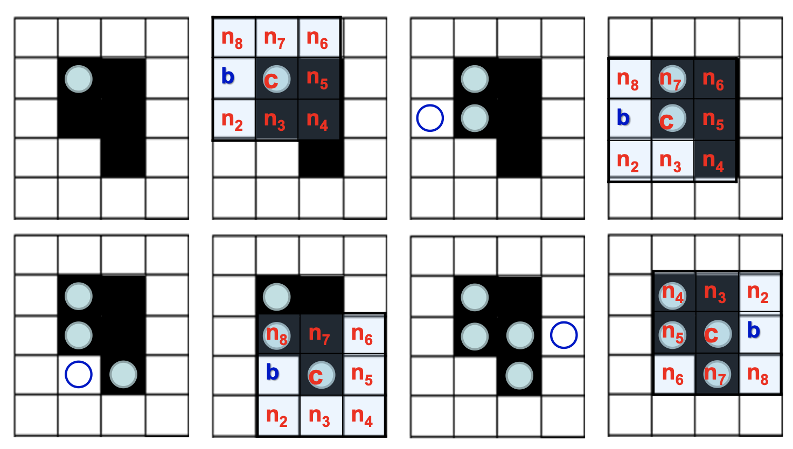
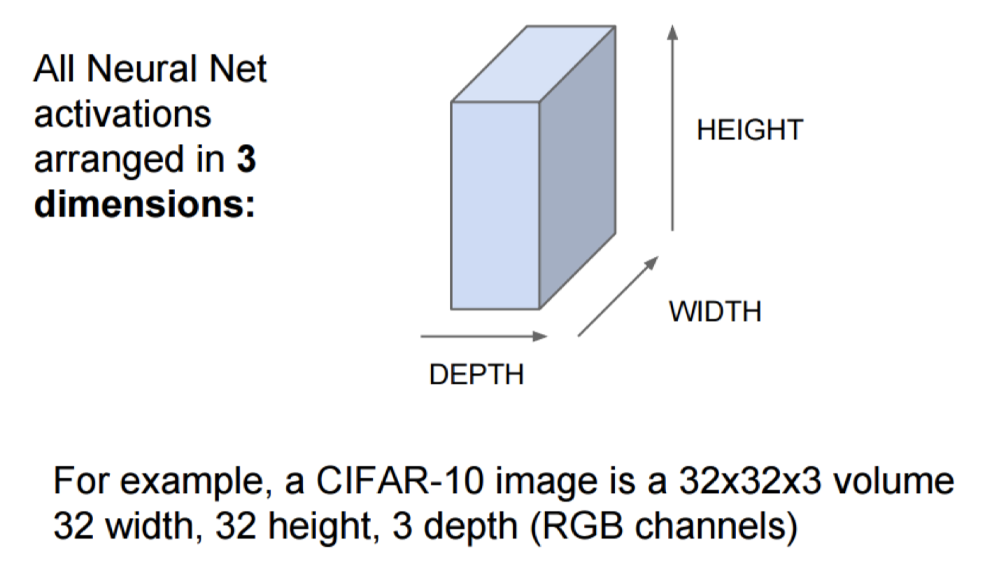
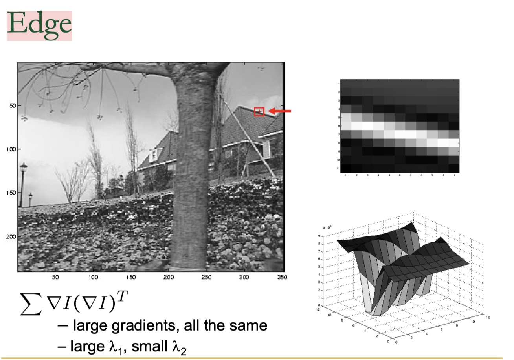
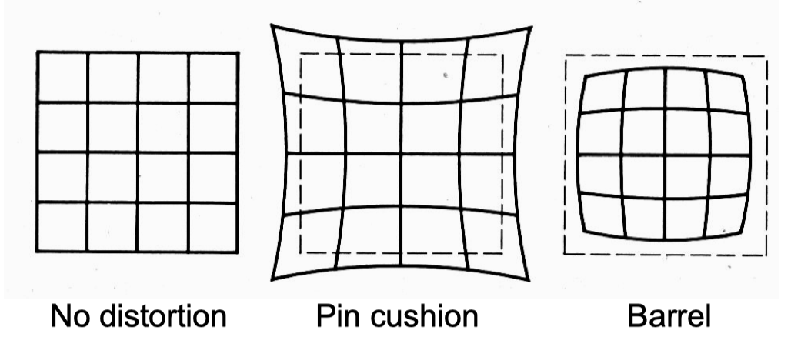

CV Couse Review
本文最后更新于：January 17, 2021 am
Gestalt Laws
- 知觉恒常性
- Law of Proximity接近原则：接近/邻近的物体会被认为是一个整体
- Law of Similarity相似原则： 在观察对象时容易把相似的物体分成一组
- Law of Closure 闭合原则：视觉系统自动尝试将敞开的图形关闭起来，从而将其感知为完整的物体而不是分散的碎片
- Law of Symmetry对称原则: 观察对象时容易将对象视为对称且围绕一个中心
- Law of Continuity连续原则: 视觉倾向于感知连续的形式而不是离散的碎片
Law of Common Fate共同命运原则: 对象容易被视为行进在光滑路径上的线条
图形与背景法则：大脑将视觉区域分为主体和背景，主体包括一个场景中占据我们主要注意力的所有元素，其余则是背景
Marr视觉表示的三个阶段
Primal Sketch：处理输入的原始图像，抽取基本特征（角点、边缘、纹理、线条、边界etc.), 这些特征的集合称为基元图
2.5D Sketch：在以观测者为中心的坐标系中，由输入图像和基元图恢复场景可见部分的深度、法线方向、轮廓etc，这些信息包含了深度信息，但不是真正的物体三维表示，因此，称为二维半图
3D Model：在以物体为中心的坐标系中，由输入图像、基元图、二维半图，恢复表示识别三维物体
二值图像
几何特性
- 面积
- 区域中心
- 方向
- 伸长率
- 密集度：$C=\frac{A}{p^2}$ （A面积，p周长)
- 形态比：区域的最小外接矩阵的长和宽之比
- 欧拉数：连通分量数-洞数
投影计算
对角线投影
连通区域
连通区域分量标记算法[贯序]
(1)从左至右，从上到下扫描图像
(2)如果象素点值为1，则(分4种情况)
如果上面点和左面点有且仅有一个标记，则复制这一标记
如果两点有相同标记，复制这一标记
如果两点有不同标记，则复制上点的标记且将两个标记输入等价表中作为等价标记
否则给这一个像素点分配一新的标记并将这一标记输入等价表
(3)如果需要考虑更多点，则返回(2)
(4)在等价表的每一等价集中找到最低的标记
(5)扫描图像，用等价表中的最低标记取代每一标记
区域边界跟踪算法

边缘
模板卷积
Origin of Edges
四种最主要的不连续
边缘检测的基本思想
函数导数反映图像灰度变化显著程度——边缘所在位置：一阶导数的局部极大值&二阶导数的过零点
基于一阶的边缘检测
梯度
Roberts交叉算子
- Sobel算子
- Prewitt算子，运算较快
- 均值差分
基于二阶的边缘检测
图像灰度二阶导数的过零点对应边缘点.
- Laplacian算子
- LoG算子
LoG=Laplacian of Gaussian
平滑去噪和边缘检测是一对矛盾，应用高斯函数的一阶导数，可以在两者之间获得一个较好的平衡。高斯滤波+拉普拉斯边缘检测
Canny边缘检测
高斯滤波器平滑图像
一阶偏导有限差分计算梯度幅值和方向
对梯度幅值进行NMS（非极大值抑制）
简化的NMS步骤
方向角离散化（360°分为8个扇区，对称扇区标号相同）
在离散后的梯度方向上找到幅值最大的点保留，其余点置零
双阈值算法检测和连接边缘（取高低阈值T1,T2）
高的阈值是将要提取轮廓的物体与背景区分开来：阈值太高，部分轮廓丢失
低的阈值是用来平滑边缘的轮廓：阈值太低，假边缘
两个阈值：T1, T2 。 大于T1的称为强边界，T1和T2之间的称为弱边界
局部特征local feature
Harris Corner detection
基本思想
在图像I(x,y)对指定大小窗口进行各个方向的平移，观测窗口内图像的相似程度
Flat: 窗口内图像基本无变化
Edge: 沿Edge平移窗口时，窗口内图像无变化
Corner: 各方向平移时都有较大变化
推导公式
$E(u,v)=\sum_{x,y}w(x,y)(I(x+u,y+v)-I(x,y))^2$
$=\sum_{x,y}w(x,y)(uI_x+vI_y)^2$
$=\sum_{x,y}w(x,y)(u^2I_x^2+2uvI_xI_y+v^2I_y^2)$
理解两个特征值的含义，以及他们与harris角点的关系
论述对旋转不变性、灰度仿射不变性、尺度不变性的情况
SIFT
1. 简略的计算步骤
尺度空间极值检测：搜索所有尺度上的图像位置。通过高斯微分函数来识别潜在的对于尺度和旋转不变的兴趣点。
关键点定位：在每个候选的位置上，通过一个拟合精细的模型来确定位置和尺度。关键点的选择依据于它们的稳定程度。
方向确定：基于图像局部的梯度方向，分配给每个关键点位置一个或多个方向。所有后面的对图像数据的操作都相对于关键点的方向、尺度和位置进行变换，从而提供对于这些变换的不变性。
关键点描述：在每个关键点周围的邻域内，在选定的尺度上测量图像局部的梯度。这些梯度被变换成一种表示，这种表示允许比较大的局部形状的变形和光照变化
2. 为什么使用梯度信息而不直接使用像素值
梯度可以表示边缘信息，并且在光照变化时有抵抗能力
3. 各种不变性的解释
1. 平移不变：SIFT是局部特征，只提取关键点点附近矩形区域的sample，所以该物体移动到任何地方提取的feature都是类似的。同时因为是划grid去提取，即便关键点稍微偏移一下feature也基本没有变化，有点类似于HOG或者CNN的pooling。
2. 旋转不变：在计算grid里面的梯度bin前需要旋转到主方向，因此有了一定的旋转不变性。而且旋转的时候每一个关键点周围的点也会跟着旋转，不会影响SIFT向量。
3. 光照不变： 计算feature vector的时候进行了归一化、卡阈值之后又一次归一化，抵消了部分光照的影响。
4. 尺度不变：金字塔模型，对每一种尺度都能进行检测。通过前一步算LoG得到的尺度来确定计算feature的范围，所以特征对应了一个尺度。所以原本不同尺度的图片能转换到相似的尺度提取相似的特征
3. SIFT步骤
SIFT[scale-invariant feature transform]特征是图像的局部特征，其对旋转、尺度缩放、亮度变化保持不变性，对视角变化、仿射变换、噪声也保持一定程度的稳定性；
SIFT算法可以分解为四步
尺度空间极值检测：搜索所有尺度上的图像位置。通过高斯微分函数来识别潜在的对于尺度和旋转不变的兴趣点。
关键点定位：在每个候选的位置上，通过一个拟合精细的模型来确定位置和尺度。关键点的选择依据于它们的稳定程度。
方向确定：基于图像局部的梯度方向，分配给每个关键点位置一个或多个方向。所有后面的对图像数据的操作都相对于关键点的方向、尺度和位置进行变换，从而提供对于这些变换的不变性。
关键点描述：在每个关键点周围的邻域内，在选定的尺度上测量图像局部的梯度。这些梯度被变换成一种表示，这种表示允许比较大的局部形状的变形和光照变化
A. 尺度空间极值检测
尺度空间理论的基本思想是：在图像信息处理模型中引入一个被视为尺度的参数，通过连续变化尺度参数获得多尺度下的尺度空间表示序列，对这些序列进行尺度空间主轮廓的提取，并以该主轮廓作为一种特征向量，实现边缘、角点检测和不同分辨率上的特征提取等。
尺度空间可以用高斯金字塔表示，Tony Lindeberg指出尺度规范化的LoG(Laplacion of Gaussian)算子具有真正的尺度不变性，Lowe使用高斯差分金字塔近似LoG算子，在尺度空间检测稳定的关键点。
尺度空间方法将传统的单尺度图像信息处理技术纳入尺度不断变化的动态分析框架中，更容易获取图像的本质特征。尺度空间中各尺度图像的模糊程度逐渐变大，能够模拟人在距离目标由近到远时目标在视网膜上的形成过程。
尺度空间的表示
一个图像的尺度空间，$L(x,y,\sigma)$定义为一个变化尺度[变化的是$\sigma$]的高斯函数$G(x,y,\sigma)$与原图像$I(x,y)$的卷积
构建高斯金字塔
- 对图像做不同尺度的高斯模糊[调整$\sigma$]
- 对图像做降采样

图像的金字塔模型是指，将原始图像不断降阶采样，得到一系列大小不一的图像，由大到小，从下到上构成的塔状模型。原图像为金子塔的第一层，每次降采样所得到的新图像为金字塔的一层(每层一张图像)，每个金字塔共n层。
为了让尺度体现其连续性，高斯金字塔在简单降采样的基础上加上了高斯滤波。
将图像金字塔每层的一张图像使用不同参数[$\sigma$]做高斯模糊，使得金字塔的每层含有多张高斯模糊图像，将金字塔每层多张图像合称为一组(Octave)，金字塔每层只有一组图像，每组含有多张(也叫层Interval)图像。另外，降采样时，高斯金字塔上一组图像的初始图像(底层图像)是由前一组图像的倒数第三张图像隔点采样得到的。
构建高斯差分金字塔
2002年Mikolajczyk在详细的实验比较中发现尺度归一化的高斯拉普拉斯函数$\sigma ^2\nabla^2G $ 的极大值和极小值能够产生最稳定的图像特征，这和其它的特征提取函数，例如：梯度，Hessian或Harris角特征类似。
而Lindeberg早在1994年就发现高斯差分函数（Difference of Gaussian ，简称DOG算子）与尺度归一化的高斯拉普拉斯函数非常近似。
因此
为了在每组中检测S个尺度的极值点，则DOG金字塔每组需S+2层图像，而DOG金字塔由高斯金字塔相邻两层相减得到，则高斯金字塔每组需S+3层图像
空间极值点检测
关键点是由DOG空间的局部极值点组成的，关键点的初步探查是通过同一组内各DoG相邻两层图像之间比较完成的。为了寻找DoG函数的极值点，每一个像素点要和它所有的相邻点比较，看其是否比它的图像域和尺度域的相邻点大或者小。中间的检测点和它同尺度的8个相邻点和上下相邻尺度对应的9×2个点共26个点比较，以确保在尺度空间和二维图像空间都检测到极值点。
B. 关键点定位
- Discard points with DOG value below threshold (low contrast)
However, points along edges may have high contrast in one direction but low in another
Compute principal curvatures from eigenvalues of 2x2 Hessian matrix, and limit ratio (Harris approach):
C. 方向确定
- Take 16x16 square window around detected feature
- Compute edge orientation (angle of the gradient - 90) for each pixel
- Throw out weak edges (threshold gradient magnitude)
- Create histogram of surviving edge orientations
方向直方图的峰值则代表了该特征点处邻域梯度的方向，以直方图中最大值作为该关键点的主方向。
为了增强匹配的鲁棒性，只保留峰值大于主方向峰值80％的方向作为该关键点的辅方向。因此，对于同一梯度值的多个峰值的关键点位置，在相同位置和尺度将会有多个关键点被创建但方向不同。仅有15％的关键点被赋予多个方向，但可以明显的提高关键点匹配的稳定性。
D. 关键点特征描述
通过以上步骤，对于每一个关键点，拥有三个信息：
（位置，尺度，方向）。
接下来就是为每个关键点建立一个描述符，用一组向量将这个关键点描述出来，使其不随各种变化而改变，比如光照变化、视角变化等等。这个描述子不但包括关键点，也包含关键点周围对其有贡献的像素点，并且描述符应该有较高的独特性，以便于提高特征点正确匹配的概率。
SIFI 描述子h(x, y,θ)是对特征点附近邻域内高斯图像梯度统计结果的一种表示，它是一个三维的阵列，但通常将它表示成一个矢量。矢量是通过对三维阵列按一定规律进行排列得到的。特征描述子与特征点所在的尺度有关，因此，对梯度的求取应在特征点对应的高斯图像上进行。
为了保证特征矢量具有旋转不变性，需要以特征点为中心，将特征点附近邻域内图像梯度的位置和方向旋转一个方向角θ，即将原图像x轴转到与主方向相同的方向。
旋转公式
然后
- Divide the 16x16 window into a 4x4 grid of cells (2x2 case shown below)
- Compute an orientation histogram for each cell
- 16 cells * 8 orientations = 128 dimensional descriptor
在最后，对特征向量进行归一化处理，去除光照变化的影响。
曲线
Hough变换
用来解决什么问题
Hough变换是基于voting原理对参数估计方法，是一种重要的形状检测技术
基本思想
图像中每一点对参数组合进行表决，赢得多数票的参数组合为胜者(结果)
具体原理
但是在直角坐标系下的表示形式，存在无法表示垂直于x轴的直线的问题，此时$a=\infty$
$y=ax+b$改写成极坐标形式$r=xcos\theta+ysin\theta$
即$y=-\frac{cos\theta}{sin\theta}x+\frac{r}{sin\theta}$
当$\theta\in[0,180]$和$r\in\mathbf{R}$或者当$\theta\in[0,360]$和$r\ge 0$时， 极坐标系中所有的直线都可以用这种形式表示。
Hough空间因此具有这两个维度: $\theta$和r, 并且极坐标系下直线由Hough空间的单个点表示，对应于唯一的一组参数$(\theta_0,r_0)$
与直角坐标系相同，极坐标系下的多点，对应于Hough空间中的多个曲线，若存在过这些点的一条直线，则Hough空间中的曲线必然相交于一点。
基本步骤
A. 4步
- 适当地量化参数空间(合适的精度即可)
- 假定参数空间的每一个单元都是一个累加器，把累加器初始化为0
- 对图像空间的每一点，在其所满足的参数方程对应的累加器上+1
- 累加器阵列的最大值对应模型的参数
B. 圆弧检测6步
- 量化关于a,b的参数空间到合适精度
- 假定参数空间的每一个单元都是一个累加器，把累加器初始化为0
- 计算图像空间中边缘的梯度幅值和角度
- 对图像空间的每一点，在其所满足的参数方程对应的累加器上+1
- 累加器阵列的最大值对应图像空间中圆心
- 得到圆心坐标之后，可以反求r
Image Stitching
RANSAC random sample consensus
A. 可以解决什么样的问题
模型参数的fitting
采用迭代的方式从一组包含outliers的数据中估算数学模型的参数。
B. 核心思想
核心思想是随机性和假设性。
随机性是根据正确数据出现的概率去随机选取抽样数据
C. 优点
是大范围模型匹配问题的一个普遍意义上的方法，且运用简单，计算快。
缺点：只能计算outliers不多的情况（投票机制可以解决outliers高的情况）
D. 基本步骤
给定的参数是：
- n: 点的数量
- k: 迭代的次数
- t: 可以被认为是内点的范围
- d: 被认为fit well的model需要的内点数
- 在数据中随机均匀地选择几个点设置为hypothetical inliers
- 计算拟合inliers的模型
- 把其他没有选择的点带入模型，计算其是否为内点
- 记录内点数量
- 重复上述步骤k次
- 比较各次拟合模型的内点数量, 选择内点数量最多的模型
E. outlier点比例给定的情况下，则k次采样后计算成功的概率是
F. 步骤
- detect key points
- build the SIFT descriptors
- Match SIFT descriptors
- Fitting the transformation(RANSAC计算Homography矩阵，进行变换)
- image Blending
物体识别
Visual Recognition
基本任务可以分为哪几大类
- 图片分类
- 检测和定位物体/图片分割
- 估计语义和几何属性
- 对人类活动和事件进行分类
都具有哪些挑战因素
视角变换
光线变化
尺度变化
物体形变
物体遮挡
背景凌乱
内部类别多样
基于词袋(BoW bag of words)的物体分类
图像的BoW是指什么意思
图像中的单词被定义为一个图像块的特征向量，图像的Bow模型即图像中所有图像块的特征向量得到的直方图
基本步骤
- 特征提取和表示（grid），每个特征为一个质点
- 通过对质点聚类建立字典（k 聚类），得到k个聚类中心，聚类中心就是词袋中的单词，所有聚类中心就是特征直方图的基
- 将图片用直方图的基表示出来，这样就可以得到关于图片的特征直方图。该直方图与单词的顺序没有关系，而是每个单词在图片中出现的频率
- 将新的图片获取质点，然后映射到直方图上进行聚类
深度学习
A. 深度学习
怎么理解被称为end-to-end的学习
raw inputs to predictions
一端输入我的原始数据，一端输出我想得到的结果。只关心输入和输出，中间的步骤全部都不管。
神经网络的学习，数学本质上是求解什么？常用的基本方法？
本质：Learning hierarchical representations from data，学习权重
常用的基本方法：梯度下降法
B. CNN
理解卷积层和Pooling层的作用
卷积层：用于提取图像中的特征
Pooling: make the representations smaller and more manageable without losing too much information.
计算卷积层中各种weight的数量
CNN和NN的结构差异

- 算一个neuron在一个固定位置需要学习几个权重
- 算output size
如果share权重的话，每个neuron只需要learn一个位置权重，其他位置都共享这个权重
如果不share权重，每个neuron 需要遍历图像，每个位置都learn一组权重
- 总结
详细看一下下边这个例子
pad2补全卷积后的图像到32*32[这块图片上有问题]
所以每个neuron在一个位置需要learn 5*5*3个权重
- 如果不share权重
那么每个neuron一共要学习 32*32*5*5*3个权重
一共有30个neuron，则一共要学习 30*32*32*5*5*3个权重
- 如果share权重
那么每个neuron一共要学习 5*5*3个权重
一共有30个neuron，则一共要学习 30*5*5*3个权重
C. BP 算法
知道BP算法的作用
计算梯度
理解梯度下降法和BP算法的关系
梯度下降 是 找损失函数极小值的一种方法，
反向传播 是 求解梯度的一种方法，解释计算神经网络中误差函数梯度的一种方法。
具体例子

光流—>运动跟踪
A. 光流解决的问题
是空间运动物体在观察成像平面上的像素运动的瞬时速度，是利用图像序列中像素在时间域上的变化以及相邻帧之间的相关性来找到上一帧跟当前帧之间存在的对应关系，从而计算出相邻帧之间物体的运动信息的一种方法.
评估从H到I到像素运动，给出图像H中的一个像素， 找到图像I中相同颜色的相近像素，解决的是像素对应问题
B. 光流的三个基本假设
- brightness constancy 亮度恒定性
- spatial coherence 空间相干性 相似像素拥有相似运动
- small motion 细微运动
C. 一个点的约束公式会推导optical flow equation
D. 哪些位置的光流比较可靠？为什么？
尽量避免用边缘上的点计算光流
使用纹理复杂区域， 梯度比较大且方向不同， 求出来的特征值比较大
不用边缘的原因

相机模型
A. 理解：景深/光圈/焦距/视场
景深depth of field
相机镜头能够取得清晰图像的成像所测定的被摄物体前后范围距离
视场field of view
镜头能够观察到的最大范围
光圈对景深的影响
镜头光圈：光圈越大，景深越小；光圈越小，景深越大；
镜头焦距镜头焦距越长，景深越小；焦距越短，景深越大;
- 一般说来，在同样的光圈下，焦距越长的镜头其景深就越小，相反则越大。所以广角镜头有很大的景深，超广角镜头在其最大光圈下几厘米外都会有清晰的成像，但长焦镜头或望远镜头则景深很小，有时仅是几厘米景深，拍人像时弄不好就会出现一只眼睛是清晰的而另一只眼睛则虚化了
拍摄距离距离越远，景深越大；距离越近，景深越小。
- 而当拍摄时的光圈大小不变，所使用的镜头焦距也不改变时，被摄体越远，画面中的前后清晰范围就越大；反之，被摄体越近，前后的清晰范围也就相对越小。
焦距对视场的影响
焦距越短，视场角越大
B. 理想的针孔pinhole camera模型
这里f,z都是距离
不妨把成像平面放到针孔前
基本投影公式及其其极坐标形式下的透视投影公式
We will use the pin-hole model as an approximation
- Put the optical center(Center Of Projection) at the origin
- Put the image plane(Projection Plane) in front of the COP
- The camera looks down the negative z axis
这边d是个正数，但是在Z轴负半轴
We get the projection by throwing out the last coordinate: $(x,y,z)\rightarrow (-d\frac{x}{z}, -d\frac{y}{z})$
对于假想的针孔照相机，针孔到屏幕的距离就是焦距
齐次坐标
convert to homogeneous coordinates
convert from homogeneous coordinates
透视矩阵
齐次坐标的好处
可以矩阵直接计算平移 旋转 尺度变换
如果不是齐次就没有平移
Camera Parameters内参矩阵
第一步：相机坐标系—>成像坐标系 其中f为焦距
如果不考虑上面S的齐次坐标的话
第二步： 物理单位与像素单位变换矩阵
考虑度量单位（mm->pixel）的不同， 以及两坐标系原点不同
其中u,v为像素坐标系坐标， x,y为成像坐标系坐标
$k_u,k_v$是一个单位物理长度对应的像素数量
$(u_0,v_0)$是成像坐标系相对于像素坐标系的偏移量
第三步：整合
最终物体的像素坐标是$(u/w, v/w)$
中间两个矩阵相乘的结果为
其中$f_u=fk_u, f_v=fk_v$
C. Distortion畸变
两种类型：Radial distortion, tangential distortion
Radial distortion
原因：
The geometry of the lens
Aperture position
分类：
枕形畸变：中间向外凸起
桶形畸变：中间向内凹陷

Tangential Distortion
原因
透镜平面和成像平面不平行引起的畸变
distortion parameters
$(k_1,k_2,p_1,p_2,k_3)$
外参
二维旋转公式比较显然，三维怎么做呢？
先绕X轴旋转，这就相当于在YZ平面内绕原点旋转
然后分别绕Y轴,Z轴旋转。
这就得到了上图中$R_x(\psi), R_y(\varphi), R_z(\theta)$三个旋转矩阵
三个矩阵相乘$R_x(\psi)\cdot R_y(\varphi)\cdot R_z(\theta)$，就得到了最终的旋转矩阵
外参一共有6个$(\psi, \varphi,\theta,t_x,t_y,t_z)$前面三个是旋转参数，后面三个是平移参数
画图展示内参、外参、畸变参数在成像各阶段中的角色
D. 相机定标 camera calibration
Given N correspondences b/w scene and images
Recover the camera parameters
- Distortion coeffients畸变系数
- 内参
- 外参
解决这个问题的基本思想是什么
一共有8个自由度
一个点有(x,y), x对应一个约束，y对应一个约束
求解至少需要4个特征点
Each view:
Gives 8 equations, because a square can described by 4 points.
？？？？？
立体视觉
A. 立体视觉三角测量的基本原理
https://blog.csdn.net/Qzx9059/article/details/89204971
$x^l$是在左眼坐标系下的坐标， $x^r$是在右眼坐标系下的坐标。向右👉是正方向，$x^r$应该是个负数
用相似做
$\frac{T-x^l+x^r}{Z-f}=\frac{T}{Z}\Rightarrow$
$Z=\frac{fT}{x^l-x^r}$
B. 立体视觉的基本步骤
消除畸变
相机矫正(rectification)
根据对极几何，左右观测对于同一物体的投影处在同一水平线上
使左右观测所得图像行对齐
- stereo matching
匹配：在1D的epipolar line直线上搜索匹配值函数的极值位置
FOR each epipolar line
FOR each pixel in the left image
compare with every pixel on same epipolar line in right image
pick pixel with minimum match cost
This will never work, so:- 计算深度——Triangulation $Z=\frac{fT}{x^l-x^r}$
结构光三维成像原理
A. 结构光成像系统的构成
结构光投影仪
CCD相机
- 深度信息重建系统
B. 利用结构光获取三位数据的基本原理
一只眼睛一束光
可以得到
$tan\theta=\frac{z}{b+x}$
根据三角形相似
$\frac{x}{x’}=\frac{(b+x)tan\theta}{f}$
解得：$x=\frac{b}{fcot\theta-x’}x’$
C. ICP algorithm
https://www.zhihu.com/question/34170804/answer/121533317
要解决什么问题
计算两组数据（两帧图像）间的旋转平移量，使之形成最佳匹配
registeration点云配准问题
基本步骤
输入：点集P, P’ 输出：最佳匹配的旋转平移量$R, t, s.t. \forall i, p_i=Rp_i’+t$
给定两个三维点集X与Y,将Y配准到X：
① 计算Y中的每一个点在X中的对应最近点
② 求使上述对应对点的平均距离最小的刚体变换，获得刚体变换参数（平移参数与旋转参数）；
③ 对Y应用上一步求得的刚体变换（平移与旋转），更新Y；
④ 如果X与Y的对应点对平均距离大于阈值，Goto ①，否则， 停止计算
人脸识别
1. Covariance
考虑多维随机变量$\mathbf{x}=(x_1, x_2, \cdots, x_d)$
协方差定义为
$cov(x_i, x_j)=E{[x_i-E(x_i)][x_j-E(x_j)]}=E(x_ix_j)-E(x_i)E(x_j)$
协方差的一些性质
Variance as a measure of the deviation from the mean for points in one dimension
Covariance from the mean as a measure of how much the dimensions vary with respect to each other
Covariance is a relationship between the 2 dimensions
The covariance between one dimension and itself is the variance
协方差的含义：符号
+: Both dimensions increase or decrease together e.g. as the number of hours studied increases, the marks in that subject increase.
−: While one increases the other decreases , or vice-versa
0: No correlation of each other. e.g. heights of students vs the marks obtained in a subject
协方差矩阵covariance matrix
性质
- 这是一个对称矩阵，因为$cov(x,y)=cov(y,x)$
- 对角线上就是方差
2. PCA principal component analysis
A.基本思想，主要作用
用于数据降维和去噪。
选择一个新的坐标系进行线性降维，使得第一轴上是最大投影方向，第二轴上是第二大投影方向….以此类推
B. 什么样的数据用PCA会比较有效
多元高斯分布
维度过高但高维信息量低，相关度高的数据
C. PCA中的一些定义
- d-维空间:$\mathbf{x}=(x_1,x_2,\cdots, x_d)$
- 投影方向:$a_1=(a_1^1,a_1^2,\cdots,a_1^d)$ 其中$a_1^Ta_1=1$
- 投影值: $z1=a_1^tx=\sum{i=1}^da_1^ix_i$
- 问题：
- 最大化$var(z1)$
- 求投影方向$arg\;\underset{a}{max}\;var(z_1)$
D. PCA求解
我们要最大化$var(z_1)=a_1^TSa_1$ subject to $a_1^Ta_1=1$
可以用拉格朗日乘子法，设$\lambda$为拉格朗日乘子，则转为最大化
$a_1^TSa_1-\lambda(a_1^Ta_1-1)$
对$a_1^T$求微分，得必要条件$Sa_1-\lambda a_1=0\Rightarrow Sa_1=\lambda a_1$
因此
为了使$var(z_1)$取得最大值，必须用最大特征值对应的特征向量!
Eigenface
Eigenface是什么
使用特征脸进行人脸识别的方法
步骤
获得人脸图像的训练集，通常为整个人脸数据库
预处理：确定模版，根据人脸两只眼睛的中心位置，缩放平移旋转，使得所有训练人脸图像与模板对其，根据模版，且出脸部区域。对所有人脸图像做灰度值归一化处理
通过PCA计算获得一组特征向量（特征脸）。通常一百个特征向量就足够
将每幅人脸图像都投影到由该特征脸张成的子空间中，得到在该子空间坐标
对输入的一幅待测图像，归一化后，将其映射到特征脸子空间中。然后用某种距离度量来描述两幅人脸图像的相似性，如欧式距离。
将重构用于人脸检测的原理
对于任意待识别样本识别 f
人脸投影到特征人脸空间中，保留了主要特征的信息，所以可以恢复人脸本来的样子
$y_f=A^Tf$ 这里的$A^T$是一个将图像投影到特征脸张成空间的转换矩阵
$\hat{f}=Ay_f$ 个人觉得$A^T=A^{-1}$，相当于做了一个逆变换
图像频域与图像分解
图像的傅立叶变换
理解变换的基本含义
傅里叶变换讲的是任何信号（如图像信号）都可以表示成一系列正弦信号的叠加，在图像领域就是将图像brightness variation 作为正弦变量。傅里叶变化储存每一个频率的magnitude和phase信息，前者代表这个频率上有多少信号，后者间接可代表空间信息。
理解图像的低频成分和高频成分
- 图像的高频部分是像素值变化剧烈的地方，如图像的边缘和轮廓。
- 低频部分是变化不剧烈的地方，对应大的色块。
我们从近处看图像看到的是高频信息，而远处看到的是低频信息
图像分解
从图像分解角度，理解傅立叶变换的意义
$\sum基图像$
怎么理解拉普拉斯图像金字塔的每一层是带通滤波
拉普拉斯金字塔是通过源图像减去先缩小再放大的一系列图像构成的。下采样的时候丢失了高频信息，而相邻金字塔相减的时候丢失了低频信息，因此只有中间频段的信息保留了下来
- 带通滤波应该是指中间频率通过
- 低通滤波应该是低频通过
图像分割
A. 基于k-means聚类的图像分割
基本原理
基于区域间的不连续性(不同区域间)和相似性(同一区域内)
已知观测集$(x{1},x{2},…,x{n})$，其中每个观测都是一个d-维实向量，k-平均聚类要把这n个观测划分到k个集合中(k≤n),使得组内平方和（WCSS within-cluster sum of squares）最小。换句话说，它的目标是找到使得下式满足的聚类$S{i}$
其中$\mu {i}$是$S{i}$中所有点的均值
总之：思想是最小化类内距离平方之和
步骤
- 随机选择K个聚类中心$c^0$
- 对图像上所有点，根据其与聚类中心的距离，将其划分到距离最近对应的中心的聚类簇
- 重新计算每一簇的均值来更新中心（簇内均值）
- 重复2，3步，直到no points are re-assigned
Pros
Simple and fast
Easy to implement
Cons
- Need to choose K
- Sensitive to outliers
Usage
- Rarely used for pixel segmentation
B. 基于Mean Shift的图像分割
基本原理
将聚类看作密度的局部最大值
步骤
- Choose kernel and bandwidth
For each point
- center a window on that point
- compute the mean of the data in the search window
- center the search window at the new mean location
- Repeat (b, c) until convergence
Assign points that lead to nearby modes to the same cluster
Pros
Good general-purpose segmentation
Flexible in number and shape of regions
Robust to outliers
Cons
- Have to choose kernel size in advance
- Not suitable for high-dimensional features
本博客所有文章除特别声明外，均采用 CC BY-SA 4.0 协议 ，转载请注明出处！